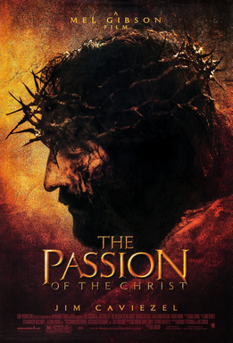
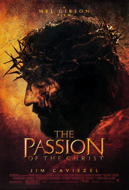

GENRE Fantasy Musical RUNTIME 102 minutes RATINGS
The Wizard of Oz is a fantasy musical film that was released
in 1939. Young Dorothy Gale and her dog Toto are swept away
by a tornado from their Kansas farm to the
magical Land of Oz and embark on a quest with three new friends to
see the Wizard, who can return her to her home and fulfill
the others' wishes.
When a tornado rips through Kansas, Dorothy Gale and her
dog, Toto, are whisked away from their house to the magical
Land of Oz. They follow the Yellow Brick Road
to the Emerald City to meet the Wizard, and on the way, they meet a
Scarecrow who wants a brain, a Tin Man who wants a heart, and a
Cowardly Lion who wants courage.
The Wizard asks them to bring him the Wicked Witch of the West's
broom to earn his help.
GENRE Fantasy RUNTIME 101 minutes RATINGS
The movie is set in Narnia, a land of talking animals and
mythical creatures that is ruled by the evil White Witch.
In the frame story, four English children are relocated to a
large, old country house following a wartime evacuation.
The youngest, Lucy, visits Narnia three times via the magic
of a wardrobe in a spare room. Lucy's three siblings are
with her on her third visit to Narnia. In Narnia, the
siblings seem fit to fulfil an old prophecy and find
themselves adventuring to save Narnia and their own lives.
The lion Aslan gives his life to save one of the children; he later rises from the dead, vanquishes the White Witch, and crowns the children Kings and Queens of Narnia.

GENRE Biblical Drama RUNTIME 2 Hrs RATINGS
2004 American epic biblical drama film co-produced and
directed by Mel Gibson from a screenplay he wrote with
Benedict Fitzgerald. It stars Jim Caviezel as Jesus of
Nazareth,
Maia Morgenstern as the Blessed Virgin Mary,
and Monica Bellucci as Mary Magdalene. It depicts the
Passion of Jesus largely according to the gospels of
Matthew, Mark, Luke,
and John. It also draws on pious accounts such as the
Friday of Sorrows, along with the purported mystical
visions attributed to Blessed Anne Catherine Emmerich.